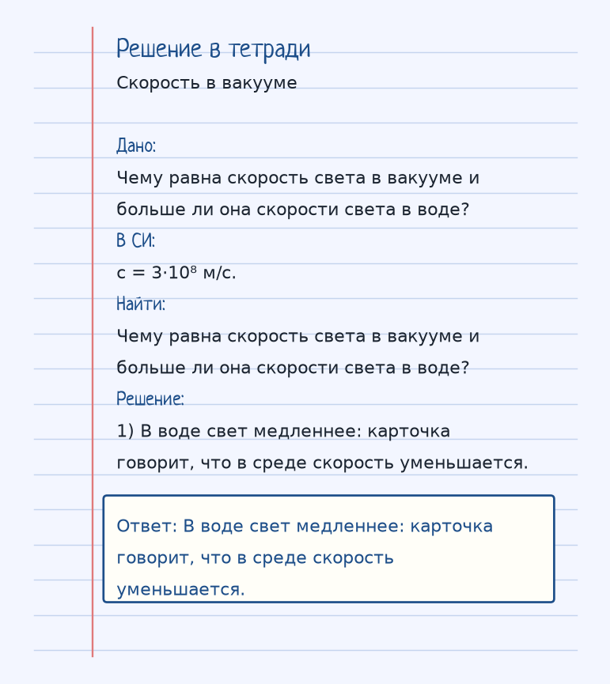
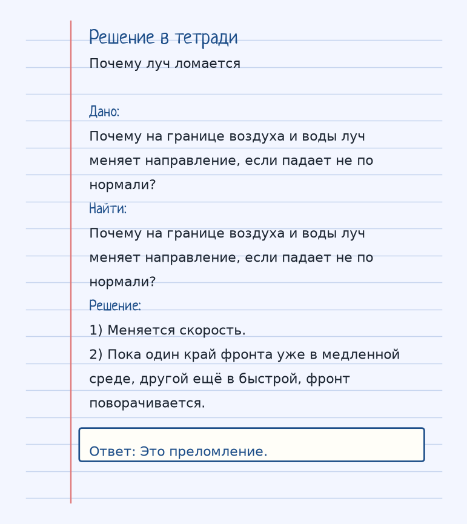

Тема «Что такое свет?»: физический смысл, единицы величин, типичные ошибки и два разобранных примера.
Схема к условию.
Физический смысл
Свет — это электромагнитная волна (и одновременно поток частиц — фотонов). В оптике мы обычно рассматриваем волновые свойства (интерференция, дифракция) и корпускулярные (фотоэффект).
В школьной оптике свет ведут двумя языками сразу. Волна объясняет интерференцию и дифракцию, поток фотонов — фотоэффект. Геометрическая оптика чаще рисует лучи: направление распространения энергии.
В вакууме скорость максимальна: c = 3·10⁸ м/с. В воде, стекле, воздухе чуть меньше вакуума свет идёт медленнее. Отношение c/v и есть абсолютный показатель преломления. Именно из-за смены скорости луч ломается на границе.
Рябь на воде — только картинка. Световая волна электромагнитная, ей не нужна вода, но «затормозилась на границе» — полезная память про преломление.
Формула и единицы
c = 3 · 10⁸ м/с
Это максимальная скорость в вакууме. В среде свет замедляется.
c = 3·10⁸ м/с в вакууме. В среде v < c.
Пояснение
Свет — это как рябь на воде, только очень-очень быстрая. Когда он попадает в воду, он «тормозится» — отсюда преломление.
Рябь на воде, только гораздо быстрее. На границе с водой свет замедляется — отсюда преломление.
Типичные ошибки
c = 3·10⁸ м/с — это вакуум, не вода и не стекло. В среде скорость меньше.
Разобранные примеры. Решение каждого открывается отдельно.
Разбор 1
Скорость в вакууме
Чему равна скорость света в вакууме и больше ли она скорости света в воде?
На схеме только условие.
Порядок записи: данные, единицы СИ, искомая величина, ход решения, ответ.
Дано. Чему равна скорость света в вакууме и больше ли она скорости света в воде?
В СИ.
c = 3·10⁸ м/с.
Найти. Чему равна скорость света в вакууме и больше ли она скорости света в воде?
Решение.
В воде скорость света меньше, чем в вакууме: в среде v = c/n.
В воде скорость света меньше, чем в вакууме: в среде v = c/n.

Разбор 2
Почему луч ломается
Почему на границе воздуха и воды луч меняет направление, если падает не по нормали?
На схеме только условие.
Порядок записи: данные, единицы СИ, искомая величина, ход решения, ответ.
Дано. Почему на границе воздуха и воды луч меняет направление, если падает не по нормали?
В СИ.
Найти. Почему на границе воздуха и воды луч меняет направление, если падает не по нормали?
Решение.
Меняется скорость.
Пока один край фронта уже в медленной среде, другой ещё в быстрой, фронт поворачивается.
Это преломление.

Разбор 3
Скорость
Чему равна скорость света в вакууме?
На схеме только условие.
Порядок записи: данные, единицы СИ, искомая величина, ход решения, ответ.
Дано. Вакуум
В СИ.
c = 3·10⁸ м/с.
Найти. c
Решение.
c = 3·10⁸ м/с.
3·10⁸ м/с.
Разбор 4
Стекло
Сравните скорость света в стекле и в вакууме.
На схеме только условие.
Порядок записи: данные, единицы СИ, искомая величина, ход решения, ответ.
Дано. n стекла больше 1
В СИ.
v = c/n.
Найти. Сравнение
Решение.
В стекле скорость меньше.
В стекле меньше.
Разбор 5
Показатель
Что равно c/v?
На схеме только условие.
Порядок записи: данные, единицы СИ, искомая величина, ход решения, ответ.
Дано. Скорость в среде v
В СИ.
Определение показателя преломления.
Найти. Величина
Решение.
Показатель преломления n.
Показатель преломления n.
Разбор 6
Луч
Что показывает луч в геометрической оптике?
На схеме только условие.
Порядок записи: данные, единицы СИ, искомая величина, ход решения, ответ.
Дано. Направление распространения
В СИ.
Не траектория одного электрона.
Найти. Смысл
Решение.
Направление распространения света.
Направление распространения света.
Разбор 7
Волна и частица
К каким явлениям относят интерференцию: к волновым или только к фотоэффекту?
На схеме только условие.
Порядок записи: данные, единицы СИ, искомая величина, ход решения, ответ.